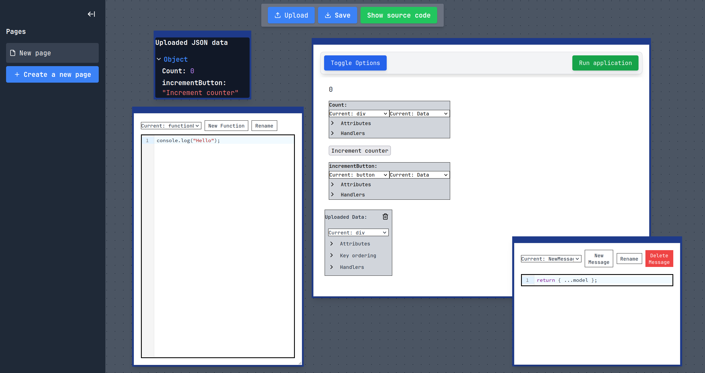

Getting started
Installation
To use the InterfaceSmith programming system, we provide two main ways of installing and running it:
- Using the provided pre-build docker image
- Building the docker image using the provided Dockerfile
The first option is much faster, as building the image from the Dockerfile involves downloading various technologies and then compiling the entire application and the Docker image, which can take a large amount of time to complete, depending on your internet connection speed and your system's capabilities.
Prerequisites
- Docker installed and running
Running the pre-built image
Running the pre-build docker image is the preferred way to run the InterfaceSmith programming system. To start the container, do the following sequence of steps:
- Load the provided image:
docker load < interfacesmith.tar
- Run the loaded container:
docker run -p 8080:8080 -p 8082:8082 interfacesmith
Building the Dockerfile and running the app
- Clone the repository:
git clone https://github.com/JerrySvarc/InterfaceSmith.git
cd InterfaceSmith
- Build the Docker image:
docker build -t interfacesmith .
- Run the newly built container:
docker run -p 8080:8080 -p 8082:8082 interfacesmith
Endpoints
When the container is running the following applications are available:
- Main editor is available on:
http://localhost:8080 - This documentation is available on:
http://localhost:8082
User interface
 Figure: Main editor interface showing the page management panel on the left and workspace on the right
After you open the Editor, you will be presented with the application's UI we can see above. It consists of a collapsable panel on the left, which provides view of the created pages. By double clicking on the page tab, the name of the page can be changed. The page can also be deleted by clicking on the thrash bin icon on the tab. New page can be created by clicking the 'New page' button.
On the right at the top, we can see a panel with several buttons. Under the panel, we can see a movable canvas containing draggable elements, each providing different modification functionality.
The top left element is a ModelViewElement, which shows the uploaded JSON data. Each field can also be collapsed.
Under the ModelViewElement, we can se the element to create, modify and delete custom functions, alongside the editor window it provides to modify the JavaScript code.
To the right, we can see the main ViewElement, which provides the main UI creation and modification functionality. It is resizible, and also serves as a preview window for the running preview of the created application.
To the right of the ViewElement, we can see the element to create, modify, and delet Elm-style messages. After a new message is created, the system automatically creates the case for the message in the Elm-style update function. The user can then define the update logic using JavaScript.
Generated applications
The applications that the system generates follow the Elm-architecture, consisting of:
- Model - Application state
- Messages - User actions
- Update - State modification logic
- View - UI rendering
Below we can see an example of the code generated by the system based on the interaction with the UI. The functionality of the application is handled by the following loop:
- User interaction triggers dispatch
- Message passed to update
- Model modified based on message
- View re-rendered with new model
- Repeat
const Msg = {
MsgExample : "MsgExample",
};
const model = {
value : 0
};
const update = (msg, event, model ) => {
switch (msg) {
case Msg.MsgExample :
return { ... model };
default :
return model ;
}
};
const view = (model , dispatch ) => `
<div >
<label>${model.value }</label>
</div>`;
function startApplication ( initialModel, updateFunction, viewFunction) {
let currentModel = initialModel ;
const render = () => {
const root = document.getElementById ("app");
root.innerHTML = viewFunction ( currentModel, dispatch );
};
window.dispatch = (msg , event ) => {
currentModel = updateFunction (msg, event, currentModel );
render ();
};
render ();
}
startApplication (model, update, view);